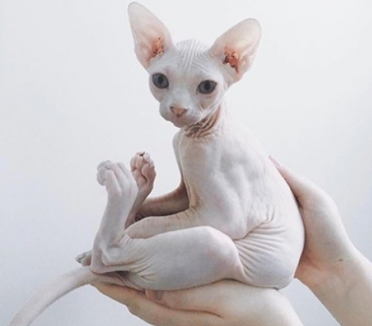

El gato egipcio o sphynx, también conocido como esfinge, ha estado rodeado de prejuicios desde su aparición, ante el desconocimiento generalizado
sobre su origen y sus cualidades. En este post, queremos ayudarte a conocer esta raza felina, la cual es muy característica, de aspecto extraño
y sorprendente. Y es que, fijándonos en su aspecto, sorprende cómo son en realidad estos mininos. Son afectuosos, curiosos, inteligentes, vivaces
y juguetones, siendo por tanto unos excelentes compañeros y la elección perfecta para familias con niños y otras mascotas.
¡Te sorprenderán gratamente! Este gato sin pelo forma parte de las tres razas “peladas”, junto a los gatos de origen ruso Peterbald y Don Sphynx, aunque son felinos bien distintos entre sí. Aunque lo conozcamos como gato egipcio, es fruto de una mutación genética espontánea de tipo recesivo que se dio en Canadá en los años 60, a raíz de la cual una serie de científicos mantuvieron el tipo y estructura conformando la primera raza de gatosin pelo que se conoce: el gato esfinge o sphynx.
